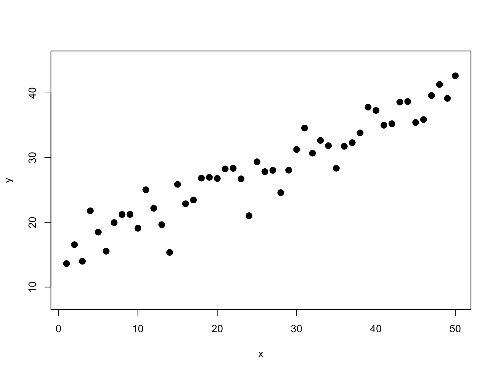
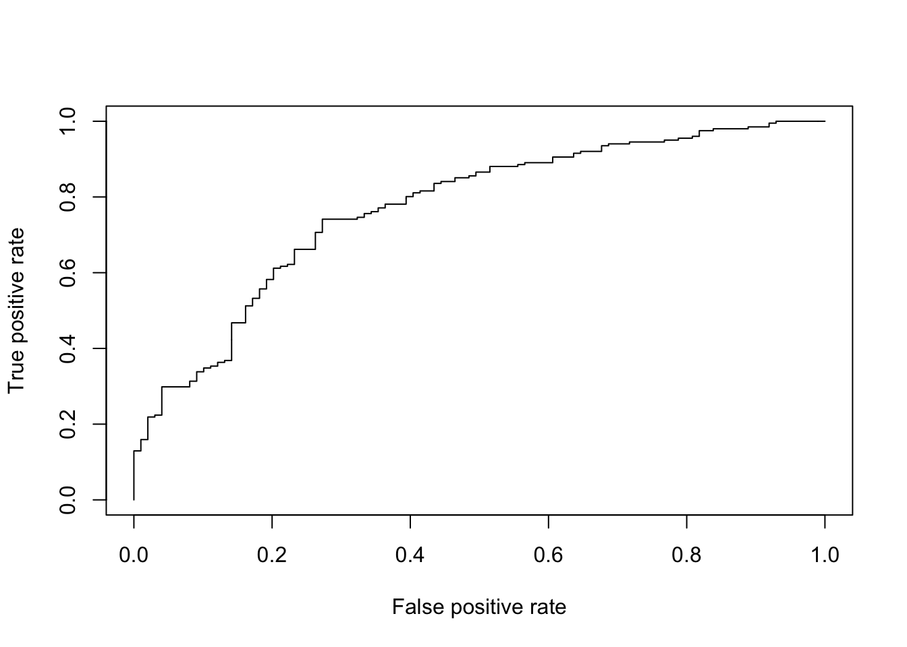
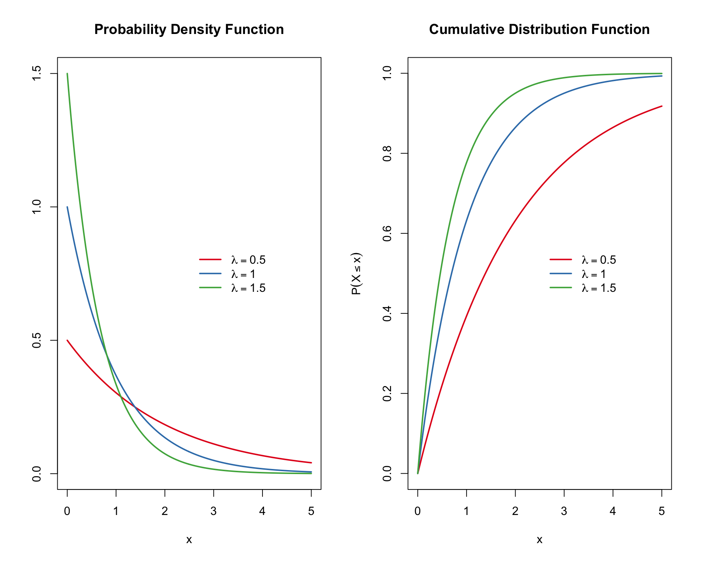
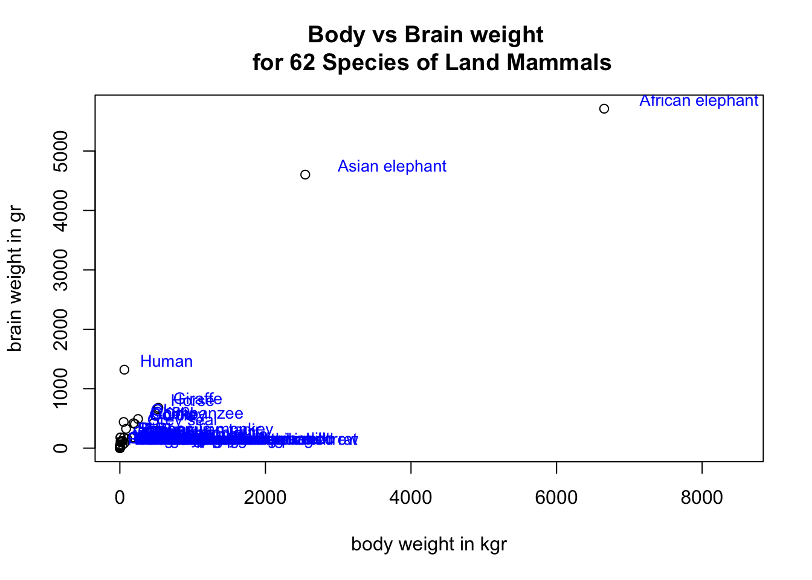
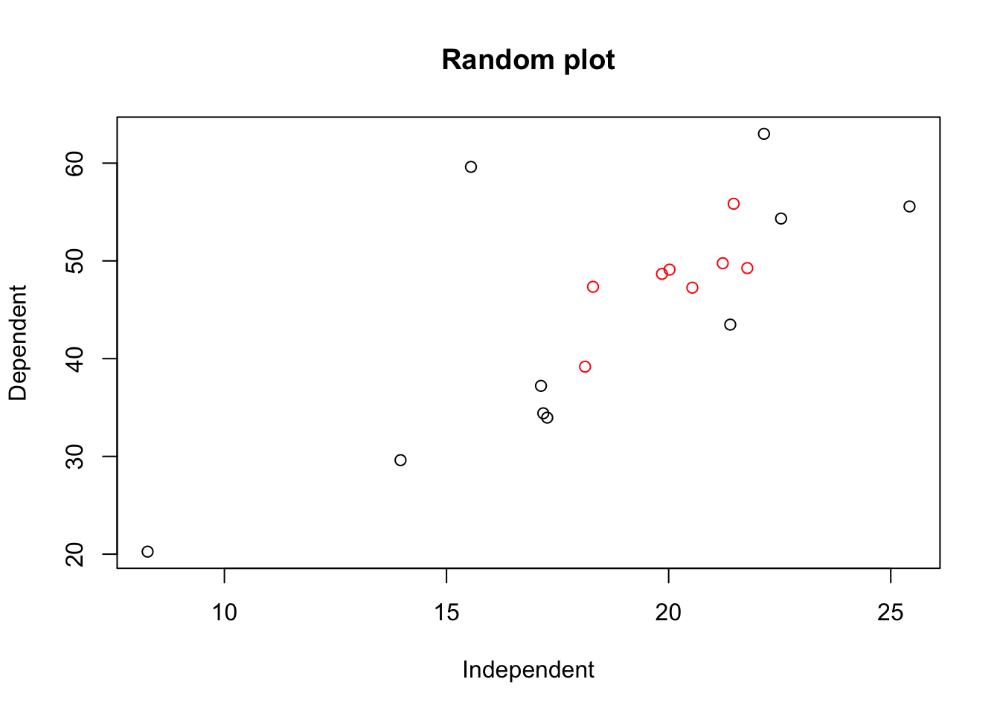
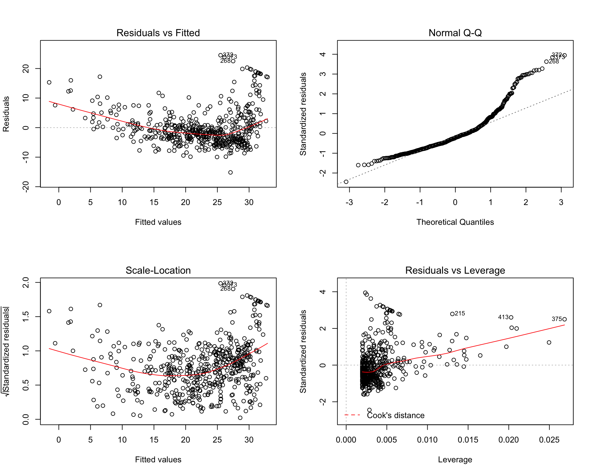
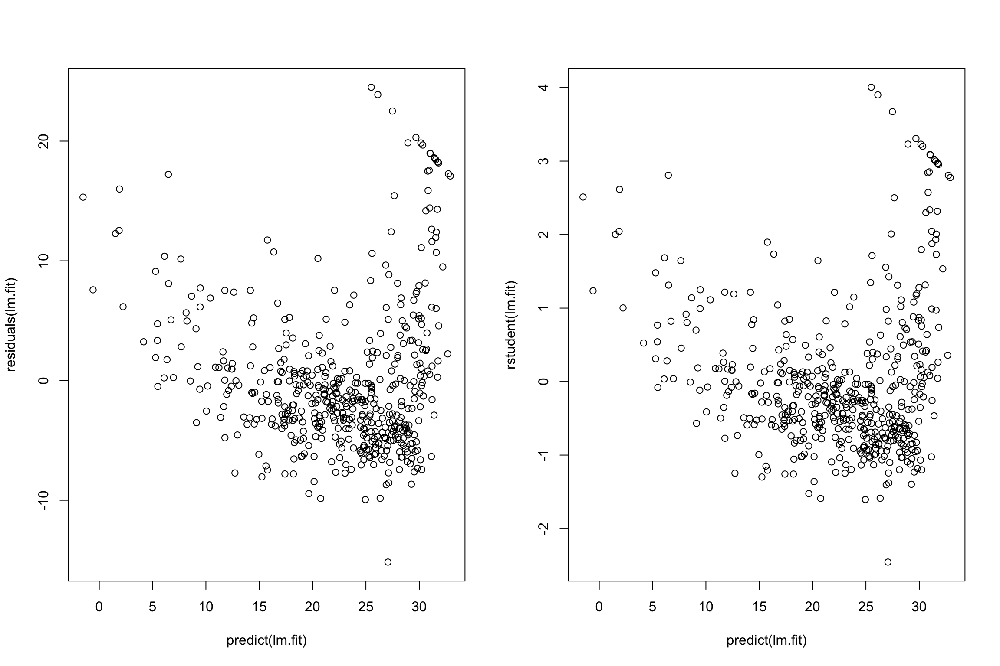

5 Distribuciones de probabilidad en R
El paquete stats de R (que se instala por defecto al instalar R, y se carga en memoria siempre que iniciamos sesión) implementa numerosas funciones para la realización de cálculos asociados a distintas distribuciones de probabilidad.
Entre las utilizadas más comúnmente podemos citar:
Distribuciones discretas:
| Distribución | Nombre en R |
|---|---|
| Binomial | binom |
| Poisson | pois |
| Geométrica | geom |
| Hipergeométrica | hyper |
Distribuciones contínuas:
| Distribución | Nombre en R |
|---|---|
| Uniforme | unif |
| Normal | norm |
| t-Student | t |
| F-Fisher | F |
| Chi-cuadrado | chisq |
Examinamos algunas de las operaciones básicas asociadas con las distribuciones de probabilidad.
Hay un gran número de distribuciones de probabilidad disponibles, pero sólo observamos unas pocas.
Para obtener una lista completa de las distribuciones disponibles en
Rpuede utilizar el siguiente comando:
help("Distributions")Para cada distribución hay cuatro comandos. Los comandos para cada distribución están precedidos de una letra para indicar la funcionalidad:
d: devuelve la función de densidad de probabilidadp: devuelve la función de densidad acumuladaq: returns the inverse cumulative density function (quantiles)r: devuelve los números generados aleatoriamente
5.1 Distribución binomial \(Bin(n,p)\)
- La distribución binomial es una distribución de probabilidad discreta. Describe el resultado de ensayos independientes de \(n\) en un experimento. Se supone que cada ensayo tiene sólo dos resultados, ya sea éxito o fracaso. Si la probabilidad de un ensayo exitoso es de \(p\), entonces la probabilidad de tener resultados exitosos de \(k\) en un experimento de ensayos independientes de \(n\) es dada por la probabilidad de la función de masa:
\[ { f(k,n,p) = \mbox{Pr}(X=k)=\binom{n}{k} p^k (1-p)^{n-k}, \quad k=0,1,2,...,n } \]
La función de distribución acumulativa puede expresarse como:
\[ { F(k;n,p) = \mbox{Pr}(X\leq k) = \sum_{i=0}^{k}\binom{n}{i} p^i (1-p)^{n-i} } \] 
with mean \(np\) and variance \(np(1-p)\).
Pregunta:
Suponga que hay doce preguntas de opción múltiple en un examen de matemáticas. Cada pregunta tiene cinco posibles respuestas, y sólo una de ellas es correcta. Encuentre la probabilidad de tener cuatro o menos respuestas correctas si un estudiante intenta responder a cada pregunta al azar.
Solución:
Dado que sólo una de cada cinco respuestas posibles es correcta, la probabilidad de responder correctamente una pregunta al azar es de \(1/5=0,2\). Podemos encontrar la probabilidad de tener exactamente 4 respuestas correctas por intentos aleatorios de la siguiente manera.
p = 1/5
n = 12
k = 4
dbinom(k,size=n,prob=0.2)## [1] 0.1328756Para encontrar la probabilidad de tener cuatro o menos respuestas correctas mediante intentos aleatorios, aplicamos la función dbinom' conk=0,1,2,4`.
prob <- NULL
for(k in 0:4){
prob <- c(prob,dbinom(k,n,p))
prob
}
prob## [1] 0.06871948 0.20615843 0.28346784 0.23622320 0.13287555sum(prob)## [1] 0.9274445# or simply
sum(dbinom(0:4,n,p))## [1] 0.9274445Alternativamente, podemos usar la función de probabilidad acumulada para la distribución binomial `pbinom’.
pbinom(4,size=n,prob=0.2)## [1] 0.9274445Solución: La probabilidad de que cuatro o menos preguntas sean contestadas correctamente al azar en un cuestionario de opción múltiple de doce preguntas es del 92,7%.
¿Cuál es la probabilidad de que 2 ó 3 preguntas sean respondidas correctamente?
sum(dbinom(2:3,n,p))## [1] 0.519691Pregunta:
Supongamos que la empresa A fabricó un producto B con una probabilidad de 0,005 de ser defectuoso. Suponga que el producto B se envía en una caja que contiene 25 B artículos. ¿Cuál es la probabilidad de que una caja elegida al azar contenga exactamente un producto defectuoso?
Solución:
Pregunta reformulada: ¿Cuál es \(P(X = 1)\) cuando \(X\) tiene la distribución \(Bin(25, 0.005)\)?
\[ P(X=1) = \binom{25}{1} 0.005^{1} (1-0.005)^{(25-1)} \]
p=0.005
choose(25,1)*p^1*(1-p)^(25-1)## [1] 0.1108317# or
dbinom(1,25,0.005)## [1] 0.1108317¿Cuál es la probabilidad de que una caja elegida al azar no contenga más de un artículo defectuoso?
Solución:
\[ P(X\leq 1) = P(X=0) + P(X=1) \]
sum(dbinom(0:1,25,p))## [1] 0.9930519# or
pbinom(1,25,0.005)## [1] 0.99305195.2 Distribución de Poisson \(Pois(\lambda)\)
La distribución de Poisson es la distribución de probabilidad de ocurrencias de eventos independientes en un intervalo. Si \(\lambda\) es la ocurrencia media por intervalo, entonces la probabilidad de tener ocurrencias \(k\) dentro de un intervalo dado es la función de masa de probabilidad dada por:
\[ \mbox{Pr}(\mbox{$k$ eventos en el intervalo}) = \frac{\lambda^k e^{-\lambda}}{k!} \] La función de densidad acumulada para la función de probabilidad acumulativa de Poisson es
\[ P(X\leq x ~|~\lambda ) = \frac{e^{-\lambda} \lambda ^x}{x!}\quad \mbox{for $x=0,1,2,...$} \]

Pregunta:
Supongamos que el número de plantas individuales de una especie dada que esperamos encontrar en un cuadrado de un metro cuadrado sigue la distribución de Poisson con una media de \(\lambda= 10\). Encuentra la probabilidad de encontrar exactamente 12 dólares por persona.
Pregunta:
Si hay doce coches cruzando un puente por minuto en promedio, encuentre la probabilidad de tener diecisiete o más coches cruzando el puente en un minuto en particular.
5.2.1 Aproximación de Binomial como Poisson
Example
El cinco por ciento (5%) de las bombillas del árbol de Navidad fabricadas por una compañía son defectuosas. El Gerente de Control de Calidad de la compañía está muy preocupado y por lo tanto toma muestras aleatorias de 100 bulbos que salen de la línea de montaje. Sea \(X\) el número en la muestra que está defectuoso. ¿Cuál es la probabilidad de que la muestra contenga como máximo tres bulbos defectuosos?
p = 0.05
k = 3
n = 100
pbinom(k,size=n,prob=p)## [1] 0.2578387Se puede demostrar que la distribución Binomial puede ser aproximada con la función de masa de probabilidad de Poisson cuando \(n\) es grande. Usando la distribución de Poisson, la media \(\lambda = np\)
lambda <- n*p
sum(dpois(0:3,lambda))## [1] 0.2650259Es importante tener en cuenta que la aproximación de Poisson a la distribución binomial funciona bien sólo cuando \(n\) es grande y \(p\) es pequeño. En general, la aproximación funciona bien si \(n \geq 20\) y \(p\leq0.05\), o si \(n\geq 100\) y \(p\leq 0.10\).
5.3 Distribution Exponencial \(Exp(\lambda)\)
La distribución exponencial es la distribución de probabilidad que describe el tiempo entre eventos en un proceso de Poisson, es decir, un proceso en el que los eventos ocurren continua e independientemente a una tasa promedio constante.
Es un caso particular de la distribución gamma. Es el continuo análogo de la distribución geométrica, y tiene la propiedad clave de no tener memoria. Además de ser utilizado para el análisis de los procesos de Poisson, se encuentra en varios otros contextos.
La función de densidad de probabilidad (pdf) de una distribución exponencial como
\[ f(x;\lambda) = \lambda \exp(-\lambda x) \]
donde \(\lambda>0\) es la tasa del evento (también conocida como parámetro de tasa, tasa de llegada, tasa de mortalidad, tasa de fracaso, tasa de transición). La variable exponencial \(x \in[0,\\infty]\)

- La función de distribución acumulada de la distribución exponencial es
\[ F(x) = \mbox{Pr}(X\leq x) = \left\{ \begin{array}{lcc} 1- e^{-\lambda x} & & x\geq 0 \\ 0 & & x < 0 \end{array} \right. \]
Con media \(\mathbb{E}(X) = 1/\lambda\), and \(\mathbb{V}ar(X) = 1/\lambda^2\).
Pregunta:
Supongamos que la cantidad de tiempo que uno pasa en un banco se distribuye exponencialmente con una media de 10 minutos, \(\lambda=1/10\).
- ¿Cuál es la probabilidad de que un cliente pase más de 15 minutos en el banco?
- ¿Cuál es la probabilidad de que un cliente pase más de 15 minutos en el banco si aún está en el banco? después de 10 minutos?
Soluciones:
\[ P(X>15)=e^{-15\lambda}=e^{-3/2}=0.2231 \]
pexp(15,rate=1/10,lower.tail = FALSE) # or 1-pexp(15,rate=1/10)## [1] 0.2231302- \[ P(X>15 | X>10)=P(X>5)=e^{-1/2}=0.606 \]
pexp(5,rate=1/10,lower.tail = FALSE)## [1] 0.60653075.4 Distribution Normal \(\mathcal{N}(\mu,\sigma^2)\)
- La función de densidad de probabilidad de la distribución Normal es:
\[ f(x | \mu,\sigma^2) = \frac{1}{\sqrt{2\sigma^2\pi}} e ^{-\frac{(x-\mu)^2}{2\sigma^2}}, \] dónde
- \(\mu\) es la media de la distribución (también la mediana y el modo).
- \(\sigma\) es la desviación estándar (\(\sigma>0\)).
\(\sigma^2\) es la variación.
El proceso para estandarizar la distribución Normal consiste en transformar la variable Normal \(N(\mu,\sigma)\) en \(N(0,1)\), es decir
\[ Z = \frac{X-\mu}{\sigma} \sim N(0,1) \]

Pregunta:
\(X\) es una variable normalmente distribuida con una media de \(\mu = 30\) y una desviación estándar de \(\sigma = 4\). Encontrar
\(P(x<40)\)
\(P(x>21)\)
\(P(30<x<35)\)
Solucion:
- Para \(x=40\), la \(z\) estandarizada es \((40-30)/4=2.5\) y por tanto:
\[ P(X<40)=P(Z<2.5)=0.9938 \]
pnorm(2.5) # or ## [1] 0.9937903pnorm(40,mean=30,sd=4,lower.tail=TRUE)## [1] 0.9937903- \(P(x>21)\)
pnorm(21,mean=30,sd=4,lower.tail = FALSE)## [1] 0.9877755- \(P(30<x<35)\)
pnorm(35,mean=30,sd=4,lower.tail = TRUE)-pnorm(30,mean=30,sd=4,lower.tail = TRUE)## [1] 0.3943502Pregunta:
El ingreso a una determinada universidad se determina mediante un examen nacional. Los resultados de esta prueba se distribuyen normalmente con una media de 500 y una desviación estándar de 100. Tom quiere ser admitido en esta universidad y sabe que debe obtener mejores resultados que al menos el 70% de los estudiantes que tomaron el examen. Tom toma el examen y saca 585 puntos. ¿Será admitido en esta universidad?
Solución:
N = 1000
hist(rnorm(N,500,100),20,col="grey")
abline(v=585,col=2)
Es \(P(X<585)\) >70%?
pnorm(585,mean=500,sd=100)## [1] 0.8023375Tom obtuvo una puntuación mejor que el 80.23% de los estudiantes que tomaron el examen y será admitido en esta universidad.
5.5 Distribución Uniforme \(U(a,b)\)
- La distribución uniforme continua es la distribución de probabilidad de la selección de números aleatorios del intervalo continuo entre a y b. Su función de densidad está definida por lo siguiente.
\[ f(x) = \left\{ \begin{aligned} \frac{1}{a-b} & \quad a \leq x \leq b\\ 0 ~~~~&\quad \mbox{elsewhere} \end{aligned}\right. \]
- La función
runif()puede ser usada para simular variables aleatorias uniformes independientes de \(n\). Por ejemplo, podemos generar 5 números aleatorios uniformes en \([0,1]\) como sigue:
set.seed(1234)
runif(5)## [1] 0.1137034 0.6222994 0.6092747 0.6233794 0.8609154- Para generar números uniformes en un intervalo del formulario \([a,b]\), usamos los argumentos
min=a. ymax=b. Por ejemplo:
set.seed(1234)
runif(3, 1.2, 5.8)## [1] 1.723036 4.062577 4.002664da 3 números uniformes en \([1.2,5.8]\).
- En el siguiente ejemplo, asignaremos 100 números uniformes independientes en el intervalo \([1,5]\) a un objeto vectorial llamado
U:
set.seed(1234)
U <- runif(100, 1, 5)
hist(U)
- La función de densidad puede ser calculada usando
dunif()
curve(dunif(x, 1, 5), from=0, to=6)
La media de \(U\) es \(\mathbb{E}[U]=frac{1}{2}(a+b)\), la mediana es \(\mathbb{Med}[U]=\frac{1}{2}(a+b)\) y la Varianza es \(\mbox{Var}[U]=\frac{1}{12}(b-a)^2\).